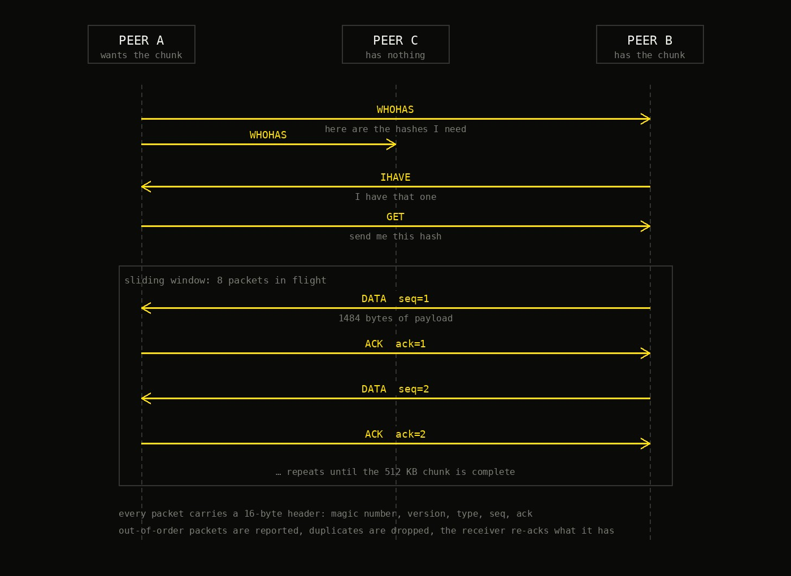

A BitTorrent-style transfer written in C, on top of UDP, where every peer is both a client and a source.
There is no server. A file is cut into 512 KB chunks, each one named by the SHA-1 hash of its contents, and any peer holding a chunk can serve it to any peer that wants it. A peer that wants a file starts out knowing only the hashes, and has to find the rest itself.
The interesting part is that all of this sits on UDP, which promises nothing: packets can arrive out of order, arrive twice, or never arrive. Everything that makes a transfer reliable has to be written by hand, on top of it.
Five packet types, all sharing a 16-byte header with a magic number, a version, a type, and sequence and acknowledgement numbers.

A peer floods WHOHAS to everyone it knows, carrying the hashes it is missing, up to 74 per packet. Any peer holding one of those hashes answers with IHAVE. The requester picks a source and sends a GET, and the source looks the hash up in its own chunk list, opens its copy of the file at the right offset, and starts sending DATA.
Every data packet is numbered so the receiver can tell what it has and what it is still waiting for.
The receiver acks the highest packet it has in order, so one lost packet does not silently become a hole in the file.
The sender keeps eight packets in flight instead of waiting for each ack in turn, with a buffer and a timer per slot for retransmits.
A packet that arrives twice is ignored; one that arrives early is reported and the receiver re-acks what it actually has.
The peers are tested against a simulated network rather than a real one: a harness sits between them and applies each link's bandwidth, delay and queue size, so packets really are queued, delayed and dropped.